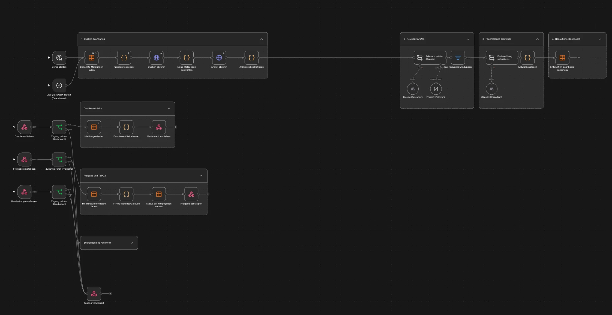

Ein News-System, mit dem take-e-way bei jeder EPR-Frage die erste Adresse wird
Das System findet Gesetzesänderungen in Europa und schreibt daraus im take-e-way-Ton drei Texte: den Fachtext für eure Website, einen LinkedIn-Post und einen Newsletter-Beitrag. Nach eurer Freigabe geht der Fachtext direkt in TYPO3. Euer Team prüft nur noch, statt zu recherchieren und zu schreiben.
Stellt euch take-e-way in zwölf Monaten vor
Eine Produktmanagerin bei einem Elektronikhersteller muss bis Freitag wissen, ob die PPWR ihr Unternehmen betrifft. Sie googelt die Frage und fragt zur Sicherheit noch ChatGPT. Beide Male landet sie bei euch.
Von der PPWR betroffen sind alle Hersteller, Importeure und Händler, die Verpackungen in der EU in Verkehr bringen, auch Online-Händler aus Drittländern …
take-e-way.deWunschbild, so könnte es aussehen
Sie liest die Antwort, sieht die Frist und klickt auf „Beratung anfragen“. Und das nicht bei einer Frage, sondern bei jeder Frage zu jedem Gesetz in jedem Land, in dem eure Kunden verkaufen. Die Nachfrage dafür gibt es schon heute.
Die Nachfrage ist da
Hersteller und Händler suchen jeden Monat tausendfach nach PPWR, Verpackungsgesetz, EPR und LUCID. Bei take-e-way.de kommt davon heute fast nichts an: 36 der 40 stärksten Suchbegriffe sind Markenbegriffe wie „take e way login“ oder „mengenmeldung“. Gefunden werdet ihr von Leuten, die euch schon kennen.
| Suchbegriff | Suchen / Monat | |
|---|---|---|
| ppwr | 8.400 | |
| verpackungsgesetz | 2.600 | |
| epr | 2.050 | |
| lucid registrierung | 700 | |
| verpackungsregister lucid | 500 | |
| batteriegesetz | 450 | |
| weee registrierung | 350 | |
| elektrogesetz | 300 | |
| erweiterte herstellerverantwortung | 150 |
- Wer ist von der PPWR betroffen?
- Welche Geräte fallen unter das Elektrogesetz?
- Welche Änderungen gibt es ab 2026?
- Ist das Batteriegesetz noch gültig?
- Wie sieht eine technische Dokumentation aus?
Kleine Begriffe wie „amazon epr nummer“ haben wenig Volumen, aber die höchste Kaufabsicht.
Und wo es eine Fachseite gibt, gewinnt ihr schon
Quelle: SISTRIX und SISTRIX AI Check, Deutschland, November 2026. Suchvolumen sind Schätzungen.
So funktioniert das System
Am einfachsten zeigt es ein echtes Beispiel. Wir spielen eine Änderung durch, die eure Kunden direkt betrifft, vom ersten Hinweis in einer Quelle bis zur Meldung auf take-e-way.de.
Das System findet die Änderung automatisch
Jeden Morgen liest das System eure Quellen: EUR-Lex, stiftung ear, Zentrale Stelle Verpackungsregister, nationale Behörden und Fachmedien. Es sortiert aus, was für eure Kunden keine neue Pflicht bedeutet, und sagt bei jedem Treffer, warum es ihn übernommen hat.
Es schreibt drei Texte: Website, LinkedIn und Newsletter automatisch
Aus einer Quelle entstehen drei Entwürfe, jeder passend zu seinem Kanal:
Bei kleineren Meldungen schreibt das System nur den Website-Text. Der Unterschied zu einem Text, den man sich von ChatGPT schreiben lässt:
- Er beruht auf der Originalquelle von heute und nicht auf dem Wissensstand eines Chatbots. Das Zitat steht beim Prüfen direkt daneben.
- Er klingt nach take-e-way, weil das System eure bisherigen Meldungen, Fachbegriffe und No-Gos kennt. Niemand muss das jedes Mal neu erklären.
- Er ist gebaut, um gefunden zu werden: Antwort in den ersten zwei Sätzen, Frist und Betroffene auf einen Blick, FAQ und ein Ziel-Keyword aus dem Content-Plan. Genau diese Struktur zitieren Google und ChatGPT.
- Er bringt Anfragen, weil er immer auf eure passende Lösungsseite verlinkt.
- Er passt zum Rest der Website: Das System weiß, was schon veröffentlicht ist, und verlinkt darauf, statt es doppelt zu schreiben.
Batteriepass ab Februar 2027: Was Hersteller von Industriebatterien jetzt vorbereiten sollten
Ab dem 18. Februar 2027 braucht jede Industriebatterie über 2 kWh einen digitalen Batteriepass, ebenso Batterien für E-Bikes, E-Scooter und E-Autos.
- Für welche Batterien gilt der Batteriepass?
- Welche Daten muss er enthalten?
- Gilt die Pflicht auch fürs Lager?
Ab dem 18. Februar 2027 braucht jede Industriebatterie über 2 kWh einen digitalen Batteriepass.
Klingt weit weg? Die Daten dafür kommen von euren Zulieferern, und das dauert.
Was Hersteller jetzt klären sollten 👇
Ab Februar 2027 Pflicht für Industriebatterien über 2 kWh sowie E-Bike- und E-Auto-Batterien. Klärt jetzt mit euren Zulieferern, welche Daten noch fehlen.
Zum BeitragEuer Fachkollege prüft und gibt frei 5 bis 10 Minuten
Das ist der einzige Schritt, den ein Mensch macht, und der wichtigste. Euer Kollege liest die drei Entwürfe neben der Quelle, korrigiert oder kommentiert und klickt auf Freigeben. Ohne diese Freigabe geht nichts online. Aus jeder Korrektur lernt das System für die nächsten Texte.
… Wer diese Batterien in Verkehr bringt, muss die Daten bis dahin vollständig erfassen.
Nach der Freigabe: Website, LinkedIn, Newsletter
Der Fachtext geht direkt in TYPO3. LinkedIn-Post und Newsletter-Beitrag liegen fertig bereit, und ihr entscheidet, wann sie rausgehen: einplanen, kopieren oder auf Wunsch direkt an euer Newsletter-Tool übergeben.
So wird TYPO3 angebunden: Wir installieren eine kleine Schnittstelle in eurer TYPO3-Installation, abgestimmt mit eurer TYPO3-Agentur. Darüber legt das System nach der Freigabe einen ganz normalen News-Datensatz an, genau so, als hätte ihn ein Redakteur angelegt. Das System nutzt dafür ein eigenes Redakteurskonto, das nur News anlegen darf. Auf Wunsch landet der Beitrag erst versteckt und wird von euch mit einem Klick sichtbar geschaltet.
- Titel
- Batteriepass ab Februar 2027: Was Hersteller von Industriebatterien jetzt vorbereiten sollten
- Teaser
- Ab dem 18. Februar 2027 braucht jede Industriebatterie über 2 kWh einen digitalen Batteriepass …
- Text
- 3 Abschnitte mit Zwischenüberschriften, Link auf „Batterien EU“
- Kategorie
- Batterien · EU
- URL
- /news/batteriepass-2027/
- SEO
- Seitentitel, Meta-Description, FAQ-Markup für Google
- Status
- versteckt, bereit zum Sichtbarschalten
Der Ablauf ist echt, die Texte in den Ausschnitten sind ein Beispiel. Vor dem Einsatz prüft euer Team jeden Text fachlich.
Probiert es selbst aus: die Live-Demo
Wir haben das System für take-e-way schon als Demo gebaut. Es liest echte Quellen von dieser Woche, etwa das EU-Amtsblatt, den Bundestag und Fachmedien, prüft, was für eure Kunden relevant ist, und schreibt daraus Fachmeldung, LinkedIn-Post und Newsletter-Baustein. Ihr könnt Meldungen öffnen, bearbeiten und freigeben und seht danach den fertigen TYPO3-Datensatz. Veröffentlicht wird dabei nichts.
- Benutzer
take-e-way- Passwort
getmarketing

Von der Demo zum Live-System
Die Demo zeigt, wie das System arbeitet. Im Projekt kommt dazu, was es braucht, damit es bei euch jeden Tag zuverlässig läuft:
- Echte Anbindung an euer TYPO3, abgestimmt auf eure Version und News-Extension und auf eurer Testumgebung geprüft.
- Eure offiziellen Quellen wie stiftung ear, Zentrale Stelle Verpackungsregister und nationale Register, auch wenn sie keinen Feed haben oder nur PDFs veröffentlichen.
- Euer Ton und euer Fachwissen aus eurem News-Archiv. Was als relevant gilt, stimmen wir mit eurer Fachredaktion ab.
- Doppelte Themen erkennen: Berichten drei Quellen über dieselbe Änderung, entsteht eine Meldung statt drei.
- Eigene Zugänge pro Person, Rollen für Redaktion und Freigabe und ein Protokoll, passend zu eurer ISO 27001.
- Betrieb auf eurem Server mit eigenem KI-Zugang, Backups, Kostenkontrolle und einer Warnung, wenn eine Quelle ausfällt.
Was das System über take-e-way weiß
Damit die Texte nach euch klingen und nicht nach KI, richten wir das System im Kick-off auf take-e-way ein:
- Eure Sprache: bisherige Meldungen, Fachbegriffe und Formulierungen, die ihr nicht verwendet.
- Eure Themen: Rechtsgebiete, Kernländer und Zielgruppen, für die eine Meldung relevant ist.
- Eure Lösungen: auf welche Seite jede Meldung verlinkt, damit aus Lesern Anfragen werden.
- Euer Content-Plan: welche Fragen noch keine Seite haben (siehe Abschnitt 07).
So sehen die fertigen Texte aus
Mit demselben Vorgehen entstehen bei uns schon Fachseiten zu Vorschriften für andere Kunden. Ein gutes Beispiel ist diese Seite zur Arbeitssicherheit nach ASiG und DGUV Vorschrift 2. Das Thema ist ähnlich rechtlich und erklärungsbedürftig wie eures.
Darauf lohnt es sich zu achten, denn genau so bauen wir die Seiten für take-e-way auf:
- Die Frage steht in der Überschrift, die Antwort im ersten Absatz.
- Gesetze sind benannt: ArbSchG, ASiG, DGUV Vorschrift 1 und 2.
- Eine Tabelle mit Rechenbeispiel statt langer Erklärung.
- Elf FAQ, die Google und ChatGPT direkt übernehmen können.
- Fachlich verantwortlich ist ein namentlich genannter Experte.
- Am Ende steht ein Ansprechpartner mit Kontaktformular.
Warum nicht einfach ChatGPT?
ChatGPT schreibt einen ordentlichen Text, wenn ihr ihm sagt, worüber. Alles davor und danach bleibt aber bei eurem Team, und genau das kostet heute die Zeit.
| ChatGPT mit einem Prompt | News-System für take-e-way | |
|---|---|---|
| Wer merkt, dass sich ein Gesetz ändert? | Euer Team, wie heute | Das System, jeden Morgen in euren Quellen |
| Stimmt der Inhalt? | Wissensstand von gestern, Quellen oft unklar | Jeder Text mit Link auf die Originalquelle |
| Klingt es nach take-e-way? | Jedes Mal neu erklären | Eingestellt auf eure Meldungen und Begriffe |
| Wird die Seite gefunden? | Kennt weder Suchvolumen noch Fragen | Arbeitet euren Content-Plan ab |
| Wie kommt es auf die Website? | Kopieren nach TYPO3, LinkedIn, Newsletter | Fachtext direkt in TYPO3, LinkedIn und Newsletter fertig zum Einplanen |
Und selbst bauen?
Könnt ihr, und nach der Übergabe betreibt ihr das System ohnehin selbst. Den Teil, der am längsten dauert, bringen wir fertig mit: Quellen-Monitoring, Schreib-Logik, Freigabe und Veröffentlichung laufen bei uns schon in anderen Projekten. Deshalb dauert der Aufbau wenige Wochen statt einer Neuentwicklung über Monate.
Ergebnisse bei anderen Kunden
Drei Projekte, die eurer Lage am nächsten kommen. Kundennamen nennen wir nur mit Erlaubnis, die Zahlen stammen aus abgeschlossenen Projekten.
E-Commerce: automatisierte Fachtexte in großer Zahl
Wir haben ein System aufgebaut, das laufend Ratgeber- und Kategorieseiten zu konkreten Suchanfragen erstellt. Heute ranken über 54.000 Suchbegriffe.
Für euch: dieselbe Technik wie im News-System, nur mit Gesetzen statt Produkten.
Industrie und Maschinenbau: von null zu Anfragen über die Website
SEO und LinkedIn haben wir von Grund auf aufgebaut, für ein B2B-Unternehmen mit erklärungsbedürftigem Angebot.
„Wir bekommen ständig Anfragen über die Website und müssen uns um nichts kümmern.“
Für euch: B2B, Fachthema, und das Ziel sind Anfragen, nicht nur Besucher.
Sondermaschinenbau: Platz 1 für das wichtigste Suchwort
Mit gezielten Fachseiten und technischer SEO steht der Kunde heute für sein Hauptkeyword auf Platz 1. Allein dieser Traffic wäre als Werbung rund 1.486 € im Monat wert.
Für euch: genau das Ziel für „ppwr“ mit 8.400 Suchen im Monat.
Was wir für take-e-way erwarten
Neben den laufenden Meldungen arbeitet das System einen Content-Plan ab: pro Gesetz eine Hauptseite und dazu die Fragen, die Hersteller und Händler bei Google stellen. Die Reihenfolge richtet sich nach dem Suchvolumen.
- PPWR: Pflichten für Hersteller und Händler
- Wer ist von der PPWR betroffen?
- LUCID-Registrierung Schritt für Schritt
- Was ist EPR?
- Amazon EPR-Nummer
- EPR-Dienstleister vergleichen
- ElektroG: Was Hersteller 2026 wissen müssen
- Welche Geräte fallen unter das Elektrogesetz?
- WEEE-Registrierung in der EU
- Batteriegesetz und EU-Batterieverordnung
- Für welche Batterien gilt das Gesetz?
- FAQ für „Industriebatterien entsorgen“
Prognose
So entwickelt sich das nach unserer Erfahrung, wenn das System nach fünf bis sieben Wochen live geht und 30 Meldungen im Monat erscheinen. Wir rechnen bewusst vorsichtig.
| Heute | Monat 3 | Monat 6 | Monat 12 | |
|---|---|---|---|---|
| Neue Fachseiten online | – | ca. 50 | ca. 140 | ca. 330 |
| Seiten aus dem Plan in den Top 10 | 3 | 5 | 8 bis 10 | 12 bis 15 |
| Zusätzliche Besucher pro Monat | – | 300 bis 800 | 1.500 bis 3.000 | 4.000 bis 8.000 |
| Beratungsanfragen pro Monat | – | 1 bis 4 | 8 bis 15 | 20 bis 40 |
| Nennungen in KI-Antworten | 56 | 70 | 100 | 150+ |
Annahmen: Anfragen von 0,5 % der zusätzlichen Besucher. Nennungen in KI-Antworten gemessen mit dem SISTRIX AI Check. Das ist eine Prognose und keine Zusage. Wie sich die Sichtbarkeit bei Google und in KI-Antworten entwickelt, messen wir jeden Monat von außen mit unseren SEO-Tools wie SISTRIX und Semrush. Zugriff auf eure Daten brauchen wir dafür nicht.
Dazu kommt die Entlastung im Team: 30 Meldungen von Hand brauchen rund 100 Stunden im Monat, mit dem System bleiben etwa 8 Stunden für die Prüfung. Was ein Neukunde für take-e-way wert ist, wisst ihr besser als wir. Im Termin rechnen wir die Prognose gern mit euren Zahlen durch.
Datenschutz und Sicherheit
Ihr arbeitet für Hersteller und Händler, und eure Kunden vertrauen euch ihre Daten an. Deshalb haben wir das System so gebaut, dass es davon nichts braucht.
- Keine Kundendaten: Das System liest nur öffentliche Quellen und eure bereits veröffentlichten Texte. Mit Kundendaten, Mengenmeldungen oder eurem CRM kommt es nicht in Berührung.
- Kein Zugriff auf eure Analytics: Google Analytics und Search Console brauchen wir nicht. Die Sichtbarkeit messen wir von außen mit unseren SEO-Tools wie SISTRIX und Semrush: Rankings, Suchbegriffe und Nennungen in KI-Antworten.
- Hosting in Deutschland oder bei euch: Das System läuft auf eurem Server oder bei einem Hoster in Deutschland. Das entscheidet ihr.
- Eure Texte trainieren keine KI: Wir nutzen die Business-Schnittstelle eines KI-Anbieters. Dort werden Eingaben nicht zum Training verwendet, und es gibt einen Vertrag zur Auftragsverarbeitung.
- So wenig Zugang wie möglich: In TYPO3 bekommt das System nur ein Redakteurskonto für die News. Nach der Übergabe entfernen wir unsere Zugänge, alle Zugangsdaten liegen bei euch.
- Alles nachvollziehbar: Zu jeder Veröffentlichung ist gespeichert, aus welcher Quelle sie stammt und wer sie wann freigegeben hat.
Vor dem Start schließen wir mit euch einen Vertrag zur Auftragsverarbeitung nach Art. 28 DSGVO, soweit er nötig ist. Wenn eure Datenschutz- oder IT-Abteilung Fragen hat, beantworten wir sie gern direkt.
Pakete und Preis
Wir bauen das System gemeinsam mit euch auf, betreuen es drei Monate und übergeben es dann vollständig. Es läuft auf eurem Server oder in einer EU-Cloud. Es gibt kein Abo und keine Lizenzgebühr.
News-System auf Deutsch
- Quellen-Monitoring für bis zu 3 Länder plus EU-Ebene, bis zu 8 offizielle Quellen
- Entwürfe im take-e-way-Ton, 30 bis 90 im Monat
- Pro Meldung drei Entwürfe: Website, LinkedIn, Newsletter
- Redaktions-Dashboard mit Freigabe
- Schnittstelle zu TYPO3
- Keyword-Content-Plan für die ersten 12 Wochen
- Monatlicher Sichtbarkeits-Report aus SISTRIX
- Einweisung, Dokumentation, 3 Monate Betreuung
Sprachdomains
- Freigegebene Meldungen in euren Sprachversionen
- Fachbegriffe und Länderbezug je Sprache
- Veröffentlichung auf den TYPO3-Sprachdomains
- Freigabe pro Sprache durch eure Kollegen vor Ort
- Bis zu 10 weitere Sprachen
Voraussetzung: Alle Sprachdomains laufen in einer gemeinsamen TYPO3-Installation.
Alle Preise netto zzgl. MwSt. Laufend zahlt ihr nur Server und KI-Schnittstelle direkt an den Anbieter, ohne Aufschlag: etwa 25 bis 70 € im Monat. Die Kosten seht ihr jederzeit im Dashboard. LinkedIn-Post und Newsletter sind als Entwürfe enthalten. Automatisch posten und versenden ist optional und hängt vom Zugang zu euren Konten ab.
Die Wochen zählen ab dem Zugang zu eurer TYPO3-Testumgebung. Sollen alle Sprachen schon zum Start live gehen, kommen etwa 12 Arbeitstage dazu.
Wer dahintersteht und wie es weitergeht

Darya Kablash, Gründerin von GetMarketing. Ich arbeite seit über acht Jahren im B2B-Marketing im DACH-Raum, als Growth Consultant und Fractional CMO und als Head of Growth bei Invictus Lead Generation. Das System baue und betreue ich persönlich, ihr habt also eine feste Ansprechpartnerin. LinkedIn
Nächster Schritt
In 30 Minuten zeige ich euch das System mit Beispielen zu euren Themen und beantworte eure Fragen. Danach entscheidet ihr in Ruhe.
- Termin vereinbaren, gern mit dem Fachkollegen, der später die Texte prüft
- Paket wählen
- Kick-off in der Woche danach, Livegang nach fünf bis sieben Wochen
Anhang: Was wir für take-e-way.de außerdem empfehlen
Nächste 4 Wochen
- Pro Gesetz eine Seite mit der Frage in der Zwischenüberschrift und sichtbaren Fristen (VerpackDG, PPWR, BattDG, ElektroG)
- FAQ-Blöcke mit FAQ-Markup auf Startseite und Lösungsseiten
- Strukturierte Daten für Organisation, Leistungen und Artikel
- Title, Meta-Description und H1 der Startseite schärfen
- robots.txt bereinigen und KI-Crawler bewusst zulassen
In 1 bis 3 Monaten
- Academy und Hauptdomain stärker verlinken
- Vergleichs- und Entscheiderseiten, etwa „Amazon EPR-Nummer“
- „take-e-way“ auf der Website immer zusammen mit „EPR“ und „Hamburg“ nennen
- hreflang und Domain-Strategie für die 11 Sprachen prüfen
Die Punkte 1 bis 3 setzt das News-System bei jeder neuen Seite automatisch um.
Passt. Bitte bei der Lagerfrage noch auf unser Webinar zum Batteriepass verweisen.